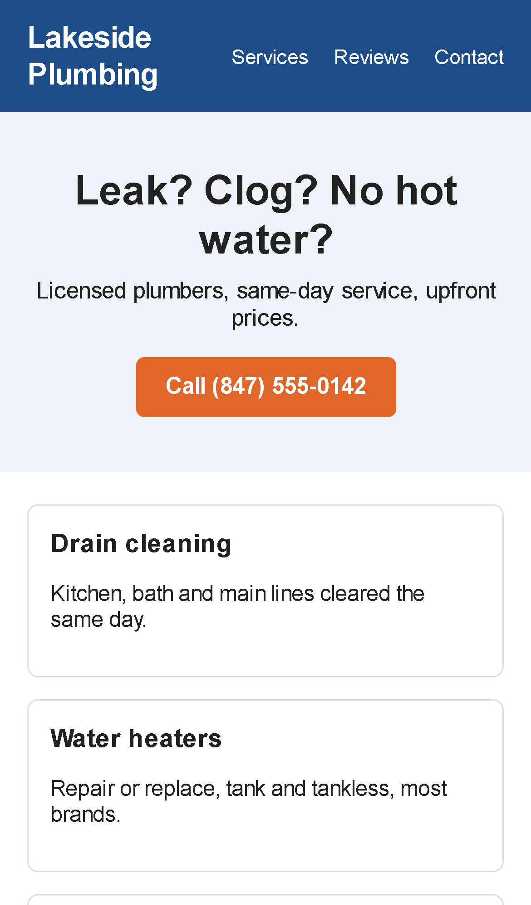

Website shrunk on phones: before and after one line
The same page on the same iPhone. On the left the page has no mobile viewport tag, so the phone draws the full desktop layout and shrinks it to fit: tiny text, a call button too small to hit, and a customer who has to pinch and zoom. On the right, one line was added and nothing else changed.

The fix
Inside the page's <head>:
<meta name="viewport" content="width=device-width, initial-scale=1">
Most builders have a field for it (WordPress: the theme's header or a header-code plugin; Wix, Squarespace and Shopify themes normally include it already, so its absence there usually means a custom template). On an old fixed-width design the layout may also need a few CSS rules so nothing runs off the side; I check every page on a real phone width before calling it done.
The page above is a sample built for this demo, not a real business. Screenshots taken with an emulated iPhone 13. More before/after examples: all demos.